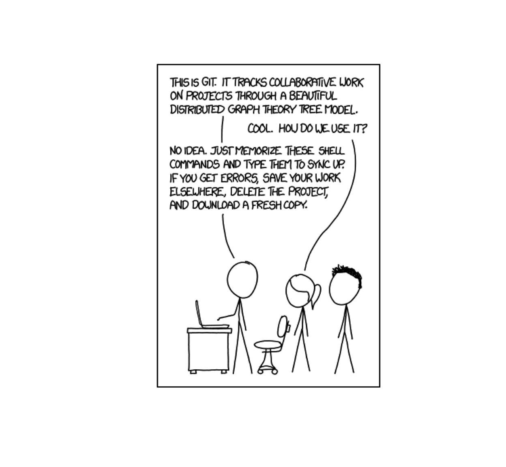
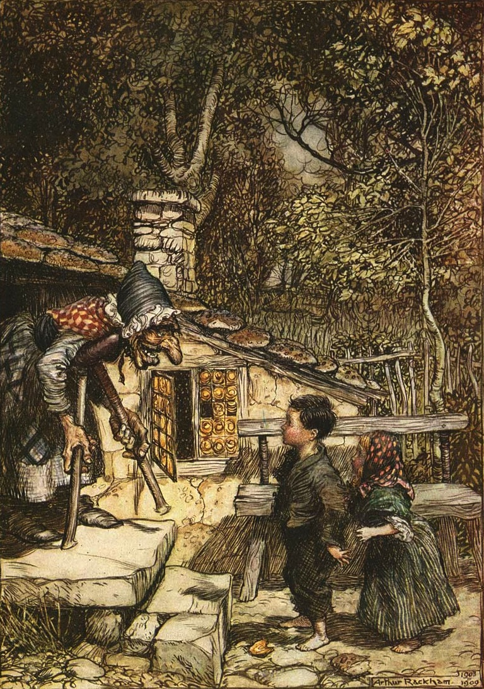
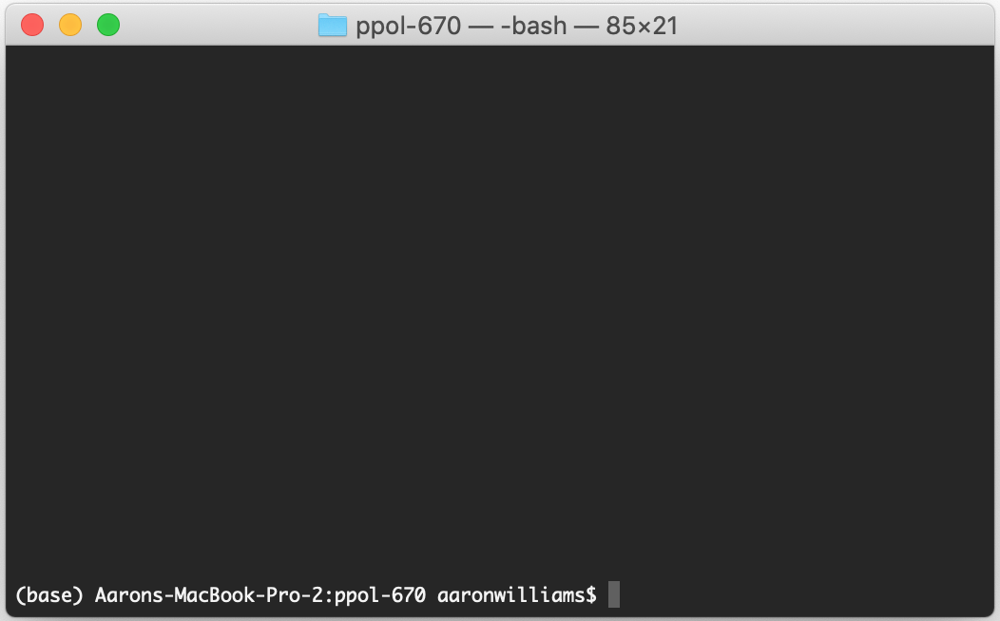
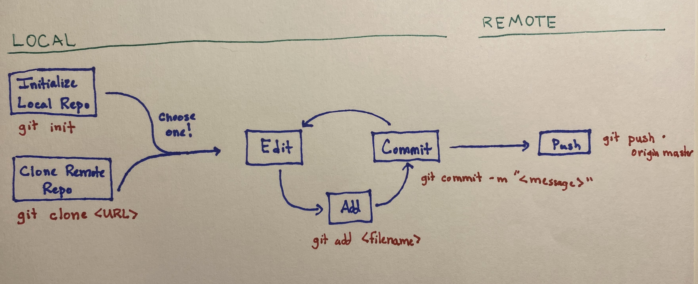

8 Reproducible Research with Git and GitHub
Abstract
Git and Github are powerful software tools used to control different versions of a codebase, track changes, and collaborate with other programmers. This section introduces both tools.

Note
<> are used throughout this chapter to indicate blanks that need to be filled in. Don’t actually submit <>. Instead, replace them with the desired text.
8.1 Command Line
The command line (also known as shell or console) is a way of controlling computers without using a graphical user interface (i.e. pointing-and-clicking). The command line is useful because pointing-and-clicking is tough to reproduce or scale and because lots of useful software is only available through the command line. Furthermore, cloud computing often requires use of the command line.
We will run Bash, a command line program, using Terminal on Mac and Git Bash on Windows. Open Terminal like any other program on Mac. Right-click in a desired directory and select “Git Bash Here” to access Git Bash on Windows.

Fortunately, we only need to know a little Bash for version control with Git and cloud computing.
pwd - print working directory - prints the file path to the current location in the
ls - list - lists files and folders in the current working directory.
cd - change directory - move the current working directory.
mkdir - make directory - creates a directory (folder) in the current working directory.
touch - creates a text file with the provided name.
mv - move - moves a file from one location to the other.
cat - concatenate - concatenate and print a file.
8.1.1 Useful tips
- Tab completion can save a ton of typing. Hitting tab twice shows all of the available options that can complete from the currently typed text.
- Hit the up arrow to cycle through previously submitted commands.
- Use
man <command name>to pull up help documentation. Hitqto exit. - Typing
..refers to the directory above the working directory. Writingcd ..changes to the directory above the working directory. - Typing just
cdchanges to the home directory.
8.1.2 Programs
We can run programs from the command line. Commands from programs always start with the name of the program. Running git commands intuitively start with git. For example:
8.2 Why version control?
Version control is a system for managing and recording changes to files over time. Version control is essential to managing code and analyses. Good version control can:
- Limit the chance of making a mistake
- Maximize the chance of catching a mistake when it happens
- Create a permanent record of changes to code
- Easily undo mistakes by switching between iterations of code
- Allow multiple paths of development while protecting working versions of code
- Encourage communication between collaborators
- Be used for external communication
8.3 Why distributed version control?
Centralized version control stores all files and the log of those files in one centralized location. Distributed version control stores files and logs in one or many locations and has tools for combining the different versions of files and logs.
Centralized version control systems like Google Drive or Box are good for sharing a Microsoft Word document, but they are terrible for collaborating on code.
Distributed version control allows for the simultaneous editing and running of code. It also allows for code development without sacrificing a working version of the code.
8.4 Git vs. GitHub
Git is a distributed version-control system for tracking changes in code. Git is free, open-source software and can be used locally without an internet connection. It’s like a turbo-charged version of Microsoft Word’s track changes for code.
GitHub, which is owned by Microsoft, is an online hosting service for version control using Git. It also contains useful tools for collaboration and project management. It’s like a turbo-charged version of Google Drive or Box for sharing repositories created using Git.
At first, it’s easy to mix up Git and GitHub. Just try to remember that they are separate tools that complement each other well.
8.5 SSH Keys for Authentication
GitHub started requiring token-based or SSH-based authentication in 2021. We will focus on creating SSH keys for authentication. For instructions on creating a personal access token for authentication, see Section 8.10 below.
We will follow the instructions for setting up SSH keys using the console, or terminal window, from Jenny Bryan’s fantastic Happy Git with R.
8.6 Git + GitHub Workflow
Repository: A collection of files, often a directory, where files are organized and logged by Git.
Git and GitHub organize projects into repositories. Typically, a “repo” will correspond with the place where you started a .Rproj. When working with Git and GitHub, your files will exist in two places: locally on your computer and remotely on GitHub.
When creating a new repository, you can use either of the following alternatives:
Initialize the repo locally on your computer and later add the repo to GitHub
Initialize the repo remotely on GitHub and then copy (clone) the repo to your computer.
To create a repository (only needs to be done once per project):
git init initializes a local Git repository.
OR
git clone <link> copies a remote repository from GitHub to the location of the working directory on your computer.
8.6.1 Basic Approach
- Initialize a repository for a project (we’ve already done this!).
- Tell Git which files to track. Track scripts. Avoid tracking data or binary files like
.xlsx. 1 - Take a snapshot of tracked files and add a commit message.
- Save the tracked files to the remote GitHub repository.
- Repeat, repeat, repeat

8.6.2 Commands
git status prints out all of the important information about your repo. Use it before and after most commands to understand how code changes your repo.
git add <file-name> adds a file to staging. It says, “hey look at this!”.
git commit -m "<message>" commits changes made to added files to the repository. It says, “hey, take a snapshot of the things you looked at in the previous command.” Don’t forget the -m. 2
git push origin main pushes your local commits to the remote repository on GitHub. It says, “hey, take a look at these snapshots I just made”. It is possible to push to branches other than main. Simply replace main with the desired branch name.
git log --oneline shows the commit history in the repository.
git diff shows changes since the last commit.
8.7 GitHub Pages
GitHub Pages are free websites hosted directly from a GitHub repository. With a free GitHub account, a GitHub repo must be public to create a GitHub page with that repo. When you create a GitHub page, you associate it with a specific branch of your repo. GitHub Pages will look for an index.html, index.md, or README.md file as the entry file for your site.
8.8 Collaboration Using Git + GitHub (with branching)
Our workflow so far has involved only one person, but the true power of GitHub comes through collaboration! There are two main models for collaborating with GitHub.
- Shared repository with branching
- Fork and pull
We have almost exclusively seen approach one used by collaborative teams. Approach two is more common when a repository has been publicized, and someone external to the work wants to propose changes while lacking the ability to “write” (or push) to that repository. Approach one is covered in more detail in the next chapter.

To add a collaborator to your repository, under Settings select “Collaborators” under the Access menu on the left. Select the “Add people” button and add your collaborators by entering their GitHub user name.
8.9 Conclusion
Git is a distributed version-control system. It is used for tracking changes in the code. GitHub is an online hosting service for version control using git. Key workhorse commands are git status, git add, git commit -m <message> git push and git diff. GitHub is also great because it will host websites using GitHub Pages.
8.9.1 Git is Confusing
We promise that it’s worth it.
8.9.2 Resources
8.10 Personal Access Tokens for Authentication
- Starting on your GitHub account navigate through the following:
- Click your icon in the far right
- Select Settings at the bottom of the drop down menu
- Select Developer Settings on the bottom left
- Select Personal access tokens on the bottom left
- Select Generate new token
- Set up your Personal Access Token (PAT)
- Add a note describing the use of your token. This is useful if you intend to generate multiple tokens for different uses.
- Select “No expiration”. You may want tokens to expire if that access sensitive resources.
- Select scopes. You must select at least the “repo” scope. You may want to add other scopes but they are not required for this course.
- Click Generate token
- This is your only chance to view the token. Copy and paste the token and store it somewhere safe. If you lose the token, you can always generate a new token.
- Git will prompt you for your GitHub username and password sometimes while cloning repositories or pushing to private repositories. Use your GitHub username when prompted for username. Use your generated PAT when prompted for password.
8.11 Initialize a Repo Locally and Add to GitHub
This only needs to happen once per repository
- Initialize a local repository with
git initas outlined above. - On GitHub, click the plus sign in the top, right corner and select
New Repository. - Create a repository with the same name as your directory.
- Copy the code under …or push an existing repository from the command line and submit it in the command line that is already open.
Github refuses to store files larger than 100 MiB. This poses a challenge to writing reproducible code. However, many data sources can be downloaded directly from the web or via APIs, allowing code to be reproducible without relying on storing large data sets on Github. Materials later in this book discuss scaping data from the web and using APIs.↩︎
The
-mstands formessage. Writing a brief commit message like “fixes bug in data cleaning script” can help collaborators (including your future self) understand the purpose of your commits.↩︎